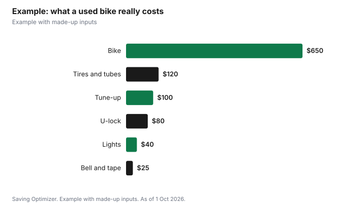

Sports · Canada
Buying a Used Road Bike in Canada: Checks, Stolen-Bike Searches and a Fair Price

To buy a used road bike in Canada safely, start with the serial number: find it, usually on the bottom bracket shell under the pedals, and search it against stolen-bike reports, such as 529 Garage's free Check a Bike search, before you talk price. Then check that the frame size fits you, inspect the frame, wheels, brakes and drivetrain, and take a test ride. Budget for more than the sticker price: a tune-up, a good lock and, in Ontario, the bell, lights and reflective tape the law requires. A fair deal is one where the bike plus those extras still costs less than a comparable new bike.
Key takeaways
- Search the serial number in a stolen-bike registry before paying.
- The serial is usually on the bottom bracket shell (529 Garage).
- Ontario requires a bell or horn, front and rear lights or reflectors at night, and fork reflective tape.
- Helmets are required by law in Ontario under 18.
- Budget for a tune-up, lock and lights on top of the price.
- Example with made-up inputs: a $650 bike that costs $1,015 ready to ride.
Step one: the serial number and a stolen-bike search
529 Garage, a bike registration service, explains that the serial number is usually etched or stamped on the bottom bracket shell, where the pedal cranks meet the frame, and that almost all manufacturers put it there. If it is not there, look on the seat tube, the top of the crank, under the top tube or on the head tube. Its Check a Bike tool lets you search a serial against reports of stolen bikes. A seller who will not let you see the serial, or a serial that has been filed off, is a reason to walk away.
Toronto Police say manufacturers mark most bicycles with a serial number and recommend registering your bike in its online Bicycle Registry System. After you buy, register it under your name with your local police registry or a service like 529 Garage, so it can be returned if it is recovered.
| Location | Notes |
|---|---|
| Bottom bracket shell | Most common; flip the bike over |
| Seat tube | Near the bottom |
| Top of the crank | Where the pedals attach |
| Under the top tube | Between head tube and seat tube |
| Head tube | Front of the frame |
Step two: size and fit
A bargain that does not fit is not a bargain. Road bike sizes vary by brand, so ask the seller for the frame size and the model year, and look up the manufacturer's size chart for your height. On the test ride you should be able to stand over the top tube comfortably and reach the bars without locking your elbows. Small changes like a stem swap or saddle adjustment can fine-tune fit, but they cannot fix a frame that is the wrong size.
Step three: inspect the bike
- Frame and fork: look for cracks, dents and paint bubbles, especially around joints and on carbon frames. Walk away from any crack.
- Wheels: spin each wheel and watch for wobble; squeeze spokes for loose ones; check the rims for deep wear.
- Brakes: squeeze hard; levers should stop well before the bars. Check pads or rotors for wear.
- Drivetrain: shift through every gear on the stand and on the road. Skipping or grinding can mean a worn chain, cassette or chainrings.
- Tires: look for cracks and worn tread.
- Bearings: rock the headset and cranks side to side; any knocking means service is due.
- Paperwork: an original receipt or a registration in the seller's name is reassuring.
| Issue | Example fix | Example cost |
|---|---|---|
| Stretched chain | New chain | $45 |
| Worn cassette too | Cassette and chain | $110 |
| Worn tires | Two tires and tubes | $120 |
| Brake pads | Pads front and rear | $40 |
| General service | Basic tune-up | $100 |
Ontario equipment rules
The Ontario government says a bicycle must have a bell or horn, a white light on the front and a red light or reflector on the back when riding at night, white reflective tape on the front forks and red reflective tape on the rear forks. By law, cyclists under 18 must wear an approved helmet; for those 18 and older a helmet is strongly recommended but not legally required. Many used road bikes are sold without a bell, lights or tape, so add them to your budget. Other provinces and cities set their own rules, so check locally.
Step four: locks and theft protection
Toronto Police recommend a good-quality lock such as a hardened steel U-shaped lock or a hardened steel chain and padlock, and say to lock the bicycle and both wheels to an immovable object that cannot be easily cut or broken. If your bike has no serial number, they suggest engraving an identifying number on the frame. Budget for a quality lock with the bike, not later.
Where to buy
Local bike shops sometimes sell used or trade-in bikes that have been serviced, sometimes with a warranty, usually at a higher price than a private sale. Online marketplaces have the widest choice and the lowest prices but no protection. Bike co-ops and community bike shops may sell refurbished bikes and teach you to maintain them. Meet sellers in daylight in a public place, bring a friend who rides, and pay only after the serial search and test ride.
Example with made-up inputs
These numbers are an example with made-up inputs. A rider finds an aluminum road bike listed for $700 and negotiates to $650 after spotting worn tires. The serial search comes back clean. She pays $120 for tires and tubes, $100 for a tune-up, $25 for a bell and fork reflective tape, $40 for lights and $80 for a hardened steel U-lock. Her total is $1,015. Lights, the bell and tape, and the lock, $145 together, would be needed with a new bike too, so the fair comparison is about $870 for the used bike against a made-up $1,400 for a similar new bike without those extras.
| Item | Cost |
|---|---|
| Bike (negotiated) | $650 |
| Tires and tubes | $120 |
| Tune-up | $100 |
| Bell and reflective tape | $25 |
| Lights | $40 |
| U-lock | $80 |
| Total | $1,015 |

Steps
- Ask for the frame size, model year and serial number before meeting.
- Search the serial against stolen-bike reports.
- Inspect the frame, wheels, brakes, drivetrain and bearings, then test ride.
- Price any repairs and negotiate.
- Add a bell, lights and reflective tape, and a quality lock.
- Register the bike in your name.
Common mistakes
- Paying before seeing the serial number.
- Buying the wrong size because the price is good.
- Ignoring a crack in a carbon frame.
- Forgetting that a tune-up, lights and lock add hundreds of dollars.
Related: bike commuting safety gear and theft prevention and insurance.
Sources
- 529 Garage (Project 529), How to find a bike's serial number and Check a Bike, project529.com, as of 1 Oct 2026.
- Toronto Police Service, Bicycle theft prevention and Bicycle Registry System, tps.ca, as of 1 Oct 2026.
- Government of Ontario, Cycling safety, ontario.ca, as of 1 Oct 2026.
- Repair prices, the bike price and the new-bike comparison are made-up inputs.
Frequently asked questions
How do I check if a used bike is stolen?
Find the serial number and search it against stolen-bike reports, such as 529 Garage's Check a Bike search, before paying.
Where is the serial number on a bike?
Usually etched or stamped on the bottom bracket shell. Otherwise check the seat tube, the top of the crank, under the top tube or the head tube.
What equipment does a bike need in Ontario?
A bell or horn, a white front light and a red rear light or reflector at night, white reflective tape on the front forks and red on the rear forks.
Is a helmet required in Ontario?
By law for riders under 18. For 18 and older it is strongly recommended but not legally required.
What lock should I buy?
Toronto Police recommend a hardened steel U-lock or a hardened steel chain and padlock, locking the frame and both wheels to an immovable object.
What extra costs come with a used bike?
Often a tune-up, tires, lights, a bell, reflective tape and a quality lock.
Researched and drafted with AI assistance and fact-checked against official Canadian sources. How we create content.
Note: Education only, not legal advice.